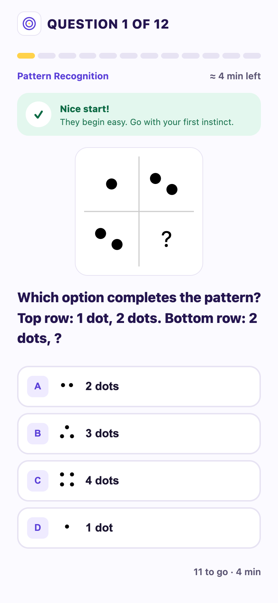
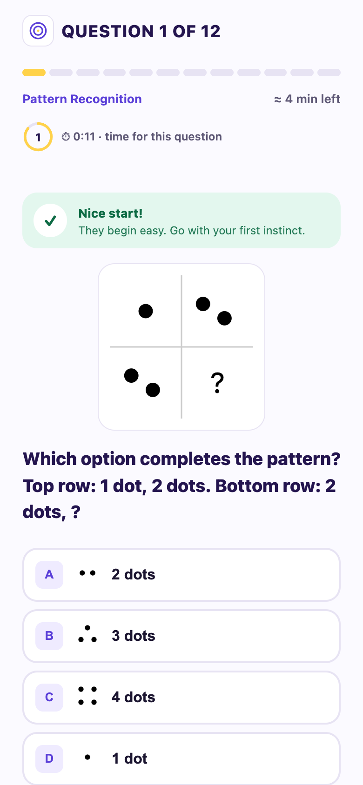
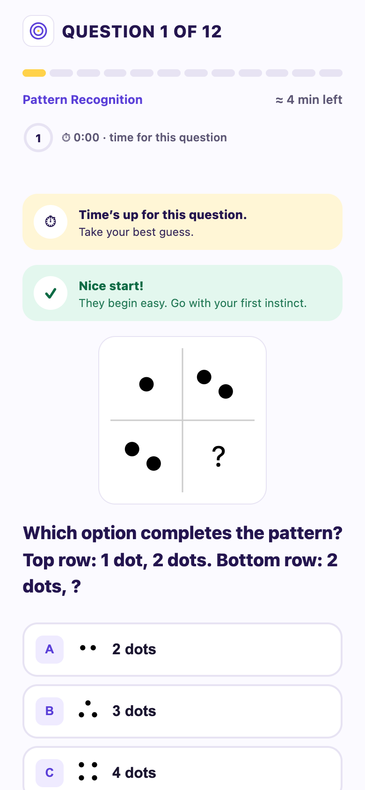
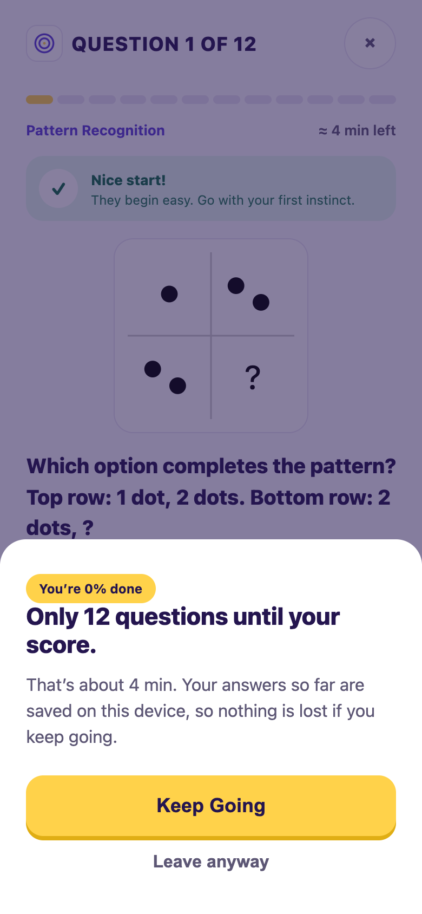
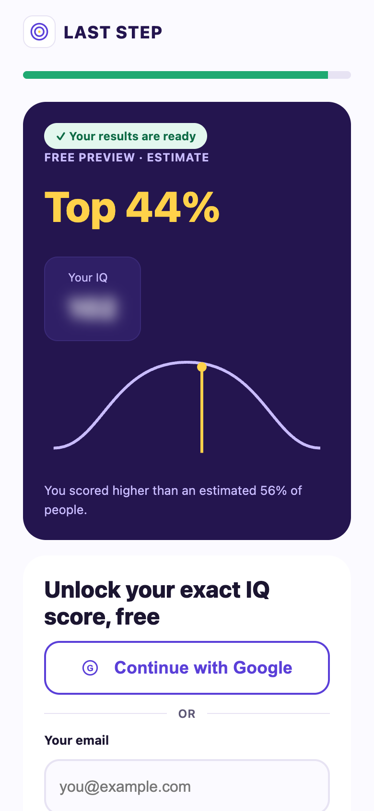
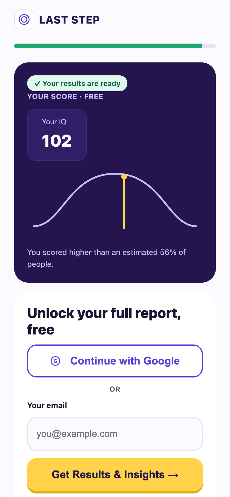

| # | Test | Step | Expected CVR impact | Why this rank |
|---|
| 1 | Test 3 — Score free, report gated | Gate | High | Every visitor who finishes the quiz hits the gate, so a gain here applies to 100% of the exposed audience, one step before the CVR numerator. Persona reviews showed hesitation concentrating at the email ask. Lowest regression risk: the percentile and the report stay gated. |
| 2 | Test 2 — Exit sheet | Quiz | Medium | Only acts on visitors who show leave intent, so its pool is smaller, but each recovered visitor is one who would otherwise convert at 0%. Cheap to build and almost no downside: it never blocks the flow. |
| 3 | Test 1 — Per-question timer | Quiz | Uncertain (could be negative) | It reaches everyone in the quiz but its direction is least certain: pace pressure can lift completion or raise anxiety for cold traffic. Run last, with the quiz-step guardrails watched closely. |
Ranks are judgment calls from funnel position, exposed audience and downside risk, not measured effects: IQly has no traffic yet, so no impact numbers are claimed. The landing step is not tested because its main lever, ad-to-page message match, is already built into the control; there is no page_view → quiz_start data yet to show what to change.
Landing
page_view → quiz_start
Cold pitch page, zero brand trust
Not tested this round
→
Quiz
quiz_start → quiz_complete
Largest leak: effort exceeds cold-traffic patience
Tested — Test 1 & 2
→
Complete → Gate
quiz_complete → gate_view
Timed auto-advance, no tap — no real decision point
Not testable
→
Gate
gate_view → signup_success
Email ask right before the payoff
Tested — Test 3
→
Post-signup
signup_success → share / retake
Engagement, not conversion
Not tested — doesn't move CVR
Complete → gate is a timed overlay with no tap required, so there's no decision point to A/B test. Post-signup steps drive engagement, not the brief's primary CVR metric, so they're out of scope for this round's 3 test slots.
Quiz step
Test 1 — Visible per-question timer
variant-1-question-timer.html · TIMER_MODE: per_question

Control
No visible pacing cue beyond "≈4 min left"

Variant — ring + live label
Countdown ring around the question number, with "⏱ 0:11 · time for this question" — resets with a brief pulse on every new question

Variant — timer reaches zero
Ring drains and the last 5s switch to a contrast-checked warning color; "best guess" banner appears — no auto-advance, no wrong mark, question stays answerable
A visible clock adds focus and signals test credibility ("this is a real test"), which raises engagement and the perceived value of the result, and so gate conversion. The main risk is the opposite: time pressure could stress mobile users into dropping off instead.
| Primary | Overall CVR (account creations ÷ page visits) |
|---|
| Secondary | quiz_start → quiz_complete (does the timer help or hurt completion); gate_view → signup_success (does a more "credible-feeling" test convert better at the gate) |
|---|
| Diagnostic | Average time per question, drop-off by question index, `question_timeout` rate — shows whether the clock is adding pressure (high timeout rate) or barely registering (low rate) |
|---|
| Guardrail | Completion rate must not regress — a credibility win that costs completions is a net loss for a cold-traffic funnel |
|---|
Sizing
Baseline quiz_start→quiz_complete 55% (placeholder) → 15% relative MDE:
557/arm (1,114 total), ~2 days at an assumed 1,000 visitors/day starting the quiz; runs a full 7-day cycle regardless.
Key risks
Shares its funnel step with Test 2 — must run sequentially, not simultaneously, or an interaction effect would make either result unattributable. Time pressure is a double-edged mechanism for anxious, low-trust cold traffic.
Quiz step
Test 2 — Exit-intent sheet
variant-2-exit-sheet.html · EXIT_SHEET: on
Control
No exit affordance during the quiz

Variant — exit sheet open
× button opens a sheet showing exact progress and a "Keep Going" recovery CTA
Catching leave intent mid-quiz and showing the visitor exactly how close they are to their score recovers part of the mid-quiz drop-off — reframing "I'm about to quit" into "I'm almost done."
| Primary | Overall CVR (account creations ÷ page visits) |
|---|
| Secondary | quiz_start → quiz_complete |
|---|
| Diagnostic | `exit_sheet_continue` ÷ `exit_sheet_open` — the recovery rate among visitors who showed leave intent, the clearest signal of whether the mechanism works at all |
|---|
| Guardrail | Time-to-complete — the sheet must genuinely re-engage people, not just stall them into converting out of friction |
|---|
Sizing
Baseline quiz_start→quiz_complete 55% (placeholder) → 15% relative MDE:
557/arm (1,114 total), ~2 days at an assumed 1,000 visitors/day starting the quiz; runs a full 7-day cycle regardless.
Key risks
Same funnel step and baseline as Test 1 — must run sequentially (or with a mutually exclusive split) against it, never simultaneously. A sheet that appears too eagerly on exit-intent gestures could itself feel like friction.
Gate step
Test 3 — Score free, report gated
variant-3-score-free-report-gated.html · GATE_MODE: score_free_report_gated

Control — blurred exact IQ
Free: percentile band only. CTA: "Show My IQ Score →". Both arms now also offer "Continue with Google" and a blurred preview of the full report

Variant — unblurred exact IQ
Free: exact IQ (102) shown. CTA follows the gated value: "Get Results & Insights →". Preview card and checklist emphasize the insights, not the score
For a zero-trust brand with no existing audience, giving the exact score away for free — gating only the skill profile and tips — builds enough trust and pride that visitors sign up to save the full report, outweighing the smaller curiosity gap left behind. (Google signup and the value-preview card ship in every arm — see the rollout note — so neither is part of this test's own change.)
| Primary | Overall CVR (account creations ÷ page visits) |
|---|
| Secondary | gate_view → signup_success |
|---|
| Diagnostic | Google vs. email split among signups (tracked in every arm), to see whether the free score changes how people sign up |
|---|
| Guardrail | Share of signups that go on to open the full gated report — confirms giving away the exact score doesn't gut post-signup engagement with the rest of the report |
|---|
Sizing
Baseline gate_view→signup_success 35% (placeholder) → 15% relative MDE:
1,336/arm (2,672 total), ~3 days at an assumed 1,000 visitors/day reaching the gate; runs a full 7-day cycle regardless.
Key risks
Targets a different, independent step from Tests 1/2 — can run in parallel with either. The main risk is the curiosity gap narrows enough that fewer visitors feel they need an account at all.